(click the bar to the left to get to the more recent posts!!!!!!!)
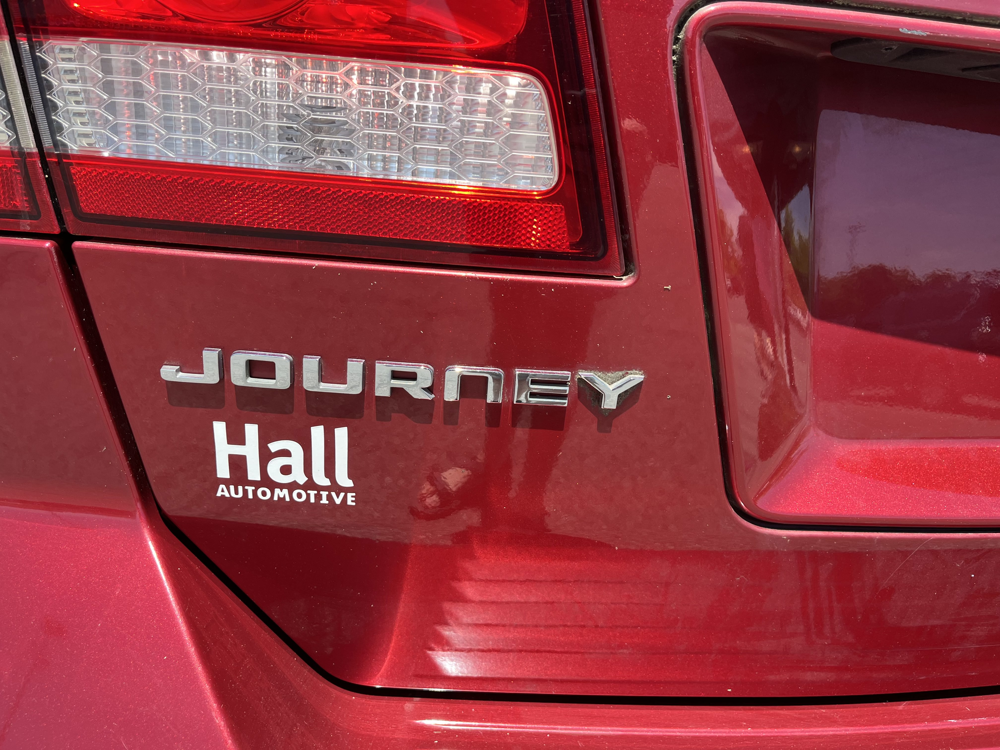
This summer, my two roommates Brendan, Poom and I have decided to enjoy our fleeting youth and lack of responsibilities by driving to Seattle and back. While I’m not sure exactly when the idea came about, there was a time where we didn’t know if Poom was going to be in the U.S., so we would take the opportunity to see the country together. We’ll largely be camping, as well as staying with friends and family (thank you!!!!). We acknowledge that we’re very privileged to be able to do something like this, and we plan on doing some good along the way. We'll have more to say on this, but for now it is important to note that many of the national parks are unable to sustain their visitors as well as occupying stolen land. From environmental, photographic, and respectful perspectives, we aim to hold ourselves to a higher standard.
You’ll get updates from us here, as well as some stats, oddities, stories, and some photos along the way. Largely, this is a good way to let our friends/family know we're still alive. My photography (some digital, some color film) from this trip will be available somewhere at some point, the photos with the blog will likely be shot on iPhone
201 - Our house name Journey - The car we’re driving in (Starting Mileage: 97093)
For those following, here’s an approximate schedule of our trip:
Route There:
Route Back:
Shenandoah (6/5-6/6) Smokies (6/6-6/7) Nashville (6/7-6/9) Little Rock (6/9-6/10) Santa Fe (6/11-6/13) SW Colorado (6/13-6/14) Grand Canyon (6/15-6/17) Utah (6/17-6/18) Salt Lake (6/19) Craters of the Moon (6/20) Seattle (6/22~6/26) Glacier (6/27-6/29) Yellowstone (6/30-7/3) Black Hills (7/4-7/5) Custer / Badlands (7/5-7/7) St. Paul (7/8~7/10) Chicago (7/11~7/13) Michigan? Home? Who knows
-Dan
FAQ:
Why is this website so bad? Don’t you all do some sort of computer science?
Yes and yes. I made it from scratch the day before we left (and I don't make websites) - it might get better, it might not. Graphic design is not our passion.
Contact info?
If you don’t have our numbers, you can email me at: daniel_fiume@brown.edu
Appalachia
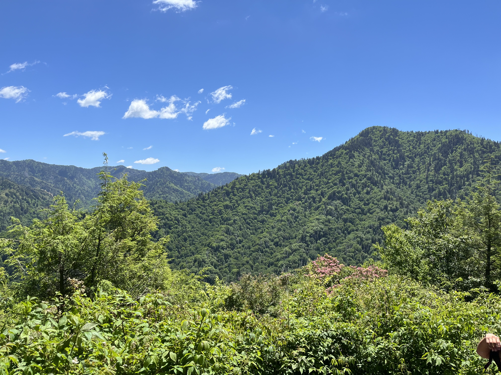
We left “my” house at precisely 9.15am on June 5, 2024 to begin our cross-country roadtrip. Within the first hour of the drive, we managed to spot a Cybertruck and a “Legotruck” in the wild. We were fortunate enough to be joined by two friends currently based out of the DMV area (not to be confused with the Department of Motor Vehicles) as we explored Luray Caverns – supposedly the largest cave system east of the Appalachians.
We stretched our imaginations trying to match the stalactite and stalagmites to shapes we knew. I also unsuccessfully tried to identify some of the host rocks surrounding the limestone formations. What I have been doing these past four years I will never know. We then went for lunch at a cat-themed cafe before bidding farewell to our friends in the DMV.
The Dodge Journey then had its first mountain road test as we climbed the Blue Ridge Mountains to our first national park on this trip – Shenandoah. We then drove on Skyline Drive, making sure to stop at overlooks along the way. The intermittent rain of the day added fog to the sides of the mountains, adding an atmosphere of mystique. We then hiked along part of the Appalachian Trail (AT) – perhaps the world’s longest walking trail – to get to a granite overlook we had seen on Skyline Drive. We then attempted to hike down to Whiteoak Falls on the Robinson River but the humidity got to us. We made it to the pool at the top of the falls before deciding to turn back, but not before we were rewarded with an amazing view of the southeast and of the waterfall itself.
We then camped at the biggest campground either of us had ever been to, complete with all luxuries such as flushing bathrooms, showers (!!), and even laundry services. As it was the first day of camping, Dan and I wanted to test how bad we would smell after camping so we did not use any of those services. Our campsite was small but had everything we needed. We experienced strong winds throughout the night, but our tent withstood the winds without much issue. We spent almost half an hour figuring out every component of setting up the tent, a figure which we weren’t too satisfied about.
During our drive on Skyline Drive, we managed to spot a few deer on the side of the road. We appreciated being able to see them from afar, but we wondered how the construction of the drive had affected their behavior.
The next day, we drove from Shenandoah to the Smokies. As Dan drove for most of the previous day, I instead took the wheel for most of the drive. We stopped at a cafe next to Roanoke College to sort out Poom’s remaining commitments, including his housing situation, then stopped at a drive-in in the next town over. It was my first experience at a drive-in, and I was sure that anyone else there would have been able to tell because I needed Dan to guide me through the process. We would pull into a parking spot, wait for an attendant to take our order from the comforts of our car, and then have the food delivered to us. I had the world’s reddest hotdog (apparently), which was good. We then drove to our campground, but not before we struggled with finding the cheapest gas prices around in eastern TN. The cheapest we found was $2.74/gallon (26.66 baht/liter for my Thai friends). The gas station was next to a Walmart parking lot, which was occupied by a replica of a Confererate-era submarine, complete with flags from the era… We then stopped at an apple orchard and grabbed some apples, in hopes that we maintain good health for the rest of the journey and keep the doctors away for a bit (well, I might become one in the future but I digress)
Our campsite in the Smokies was a nice, secluded campsite by a creek. At all campsites, we take great care in making sure that all of our trash is properly disposed of, especially food items. We have taken great care in ensuring that bears won’t be able to access our food during our stay. Once we were situated, we went on a hike to a waterfall in hopes of cooling down (and maybe swim). We hiked to Hen Wallow Falls and enjoyed walking over the log bridges across streams and admired the lush scenery along the trail. We then returned to camp to attempt to cook pasta. The stove gave us an as-of-now unsolved issue, but we managed to test out the setup and made pretty good pasta. We then cleaned up the cooking scene before retiring for the night.
Our day in the Smokies itself was filled with the constant rattling of my kettle, much to Dan’s chagrin. Once we had packed up camp and driven to our first trail however, such chagrin evaporated. We followed Dan’s mom’s recommendations for hiking and had an enjoyable hike up to Chimney Top Overlook (the trail beyond was closed due to a recent fire, something which did not deter some). The trail was STEEP in certain sections, taking me back to the one HIIT class I showed up to at Brown but the view was worth it. We then followed the horde of people to Clingman’s Dome – the highest point of the Smokies, where we briefly entered into North Carolina and sat in 45 minutes of parking lot traffic with a BEAUTIFUL view to our left. We again briefly hiked the AT and crossed back and forth between Tennessee and North Carolina. Throngs of people were doing the same hike, including a pretty smart fellow who tried to defy gravity by walking backward uphill. We then drove to another over vista point and spotted (hitch)hikers. We unfortunately could not assist them but wish them the best of luck in their own journeys. We then grabbed free, freshly made glazed donuts as we left the park on National Donut Day. Our drive to Nashville was uneventful, save for a stop at Buc-ee’s. The place is MASSIVE! We then ended the day at Dan’s aunt’s house, who generously prepared pizza for all of us and offered to host us for two nights. That concludes our adventures in Appalachia. Stay tuned for more updates!
-Poom
Nashville
Hi all! It’s Dan, with some general additions before I get into our fun weekend in Nashville. The first half of the trip is just Poom and I - Brendan will be joining us in Seattle - he has been contributing with music recs thankfully (we need more! Let us know!) As for this website, it will slowly get better (we have images and links now, woo!) Will I ever fix the fact that you have to click one of the entries on the sidebar for the website to work as intended? Maybe! For those in my family asking to comment - this isn’t social media, but feel free to email/text communicate with us in any way you know us from! You’ll also be getting some numerical updates from me - and eventually a box-score esque table on the end of each post. If you have anything we should count or keep track of, let us know! Always nice to have something to do while driving.
As Poom mentioned, my Aunt graciously hosted us during our stay in Nashville. We slept in while we were there - people who know me know that waking up at 6-7am while we had been camping was going to catch up to me. We were spoiled with great food, people, and my Aunt’s two lovely dogs (although maybe not as spoiled as her dogs, they’re the royalty in that house). We hiked a total of 16.5 miles during our time in Appalachia, with a total elevation gain of 3560 ft. We didn’t slow down though - we did 16,443 steps walking around Nashville, more than any other day except our first day of the trip.
We started our afternoon in Nashville at their main park, Centennial Park. There was a free concert series happening where we stopped by and heard a few songs from The Watson Twins. Live music is great - even country. The big attraction in Centennial Park is Nashville’s full scale replica of the Parthenon. It is impressive and now home to a small museum we visited with a great exhibit on repatriation - see this NYT article. Small may be the wrong word as on the second floor, occupying the rest of the Parthenon, is a 42 ft replica of the Athena Parthenon. It’s the tallest indoor statue in the western hemisphere, and the small statue of Nike in Athena’s hand is taller than I am at 6 '4". All the Percy Jackson reading as a kid finally paid off I guess.
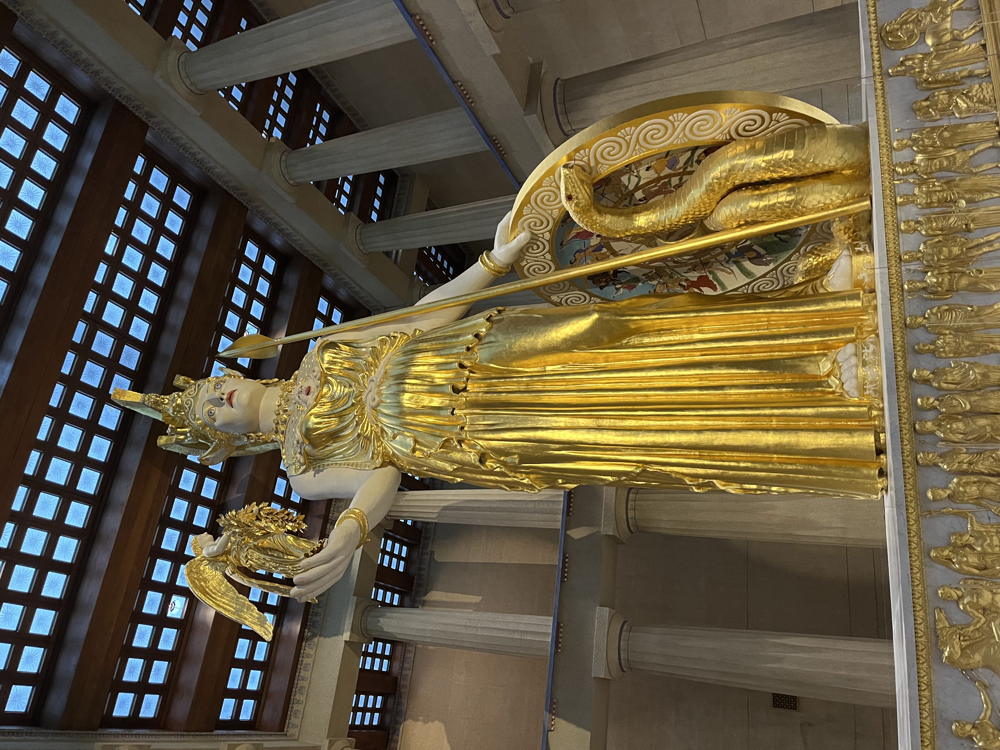
We then made our way downtown, walking past Vanderbilt’s under construction athletic facilities on the way - an awful lot of football field construction for a not very good football team. Food wise we had to try the Nashville favorite - hot chicken. We got this spicy, crispier variant of fried chicken at the southern equivalent of Quincy Market for the pvd/Boston folks. Poom was impressed by my spice tolerance, apparently after a year of eating his curry I have developed some ability to eat spicy food. After walking around downtown and Broadway for a bit, we stopped for a milkshake at the Legendary Milkshake Bar - and I was not disappointed. We shared (yes, they’re that big) a cookie dough concoction of epic proportions.
Although very touristy, we decided to head back to Broadway and go in and out of the bars, listening to all the great live music along the way. Everyone was good - especially the supporting band members - they were definitely some of the best drummers/bassists/etc I had heard live. Most impressive was how long they were on for, as one of the groups was playing about 14 hours of shows within a 24 hour period. We briefly met some people, but it shouldn’t surprise anyone that the only person I was talking to was a photographer. Overall, it was a very fun night, and it was great as always to see my aunt and uncle - now the trip out west begins!
-Dan
Driving West
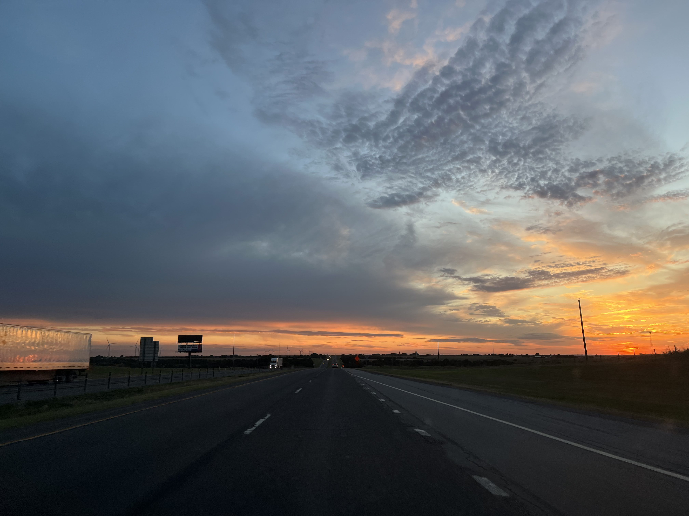
Howdy! Poom and Dan back here again with our latest blog entry. This time, we are rapidly traveling west in a bid to reach the mountains out west. However, that does not mean that we are simply leaving the locations between in a blur. Far from it! During our drive west to Santa Fe, we made sure to stop in each state we passed through – Tennessee (well, the Western Division of Tennessee), Arkansas, Oklahoma, and Texas. The following outlines our experiences in each locale. Furthermore, to keep our minds somewhat stimulated during the drive through what can sometimes be pejoratively referred to as “flyover states,” we have decided to play the classic road trip game of “spot a license plate from each state.” But since you have to look at every license plate anyway…they’re in a spreadsheet. We both just took a data visualization class - we couldn’t help ourselves. Stay tuned for the results of our spontaneous I-40 license plate sample!
TN
Our first stop was to try out some Memphis BBQ. Or rather pick it up to bring to our very kind friends who were hosting us in Little Rock. We ended up taking our first big wrong turn of the trip and took a detour through the city - no complaints from us, it was a nice drive. The place was on Elvis Presley Blvd, so we played Elvis for the rest of the drive to Little Rock. We also drove by the Bass Pro Shop pyramid on the way out of town - it is crazy that it's up there in the largest pyramids in the world. The BBQ was absolutely fantastic by the way, definitely one of the best things we’ve eaten on the trip so far.
AR
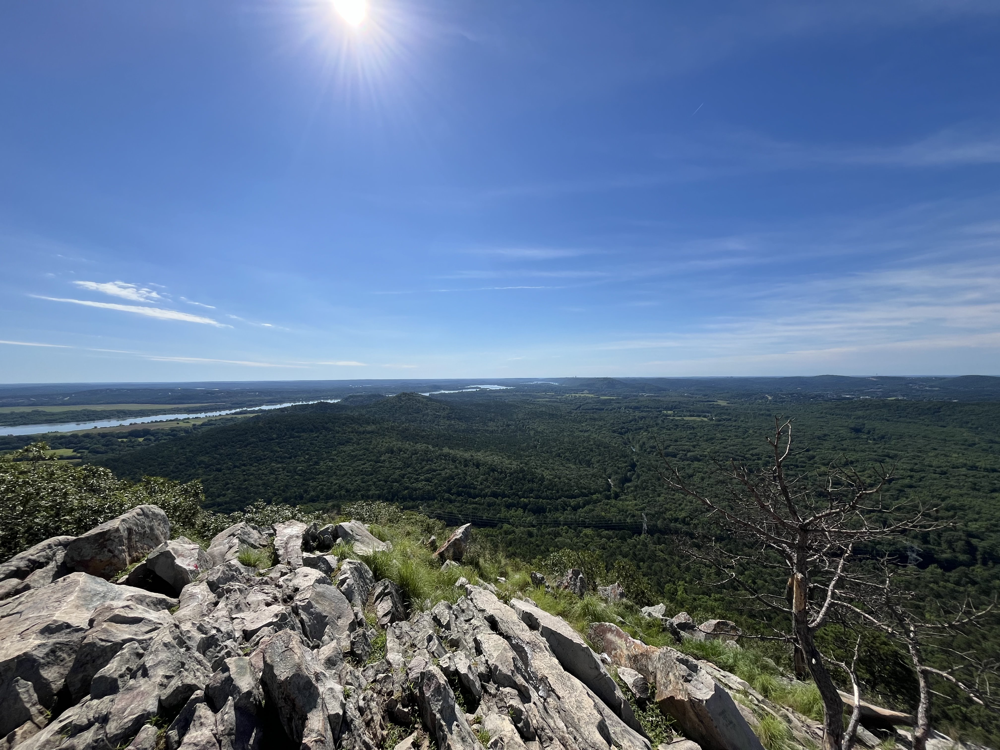
After eating bbq with our new friends, they taught us how to play Golf - the card game. Beginner’s luck definitely carried Poom, for he won basically every round. We also got to see their two wonderful cats – Willow and (?) before retiring to bed.
Following our new friends’ advice, we hiked Pinnacle Mountain close to Little Rock. We had fun scrambling up the boulder fields on the eastern face of the mountain before being rewarded with an amazing view up top of the mountain - may have been the best hike on the trip! Who knew we would find such big rocks in Little Rock. We then went to a breakfast place, which Little Rock has a lot of good ones, and had great eggs benedict.
OK
Our time in Oklahoma was rather short but it was very sweet! We first entered the state on the eastern side, which had been set aside as the homeland for many Native American tribes evicted from their homeland as a result of Andrew Jackson’s Indian Removal Act. During the drive, we learned that the tribal governments have the authority to issue their own license plates.
The drive was mostly uneventful through what I presumed to be natural vegetation, interspersed with casinos operated by the native community. Dan considered stopping to gamble, but he was too sure of his chances of winning and too tired to deal with the IRS that we did not partake. We stopped at Naija Wife Restaurant in Oklahoma City, where we had amazing fried whole fish with jollof rice and amazing service to boot! We even got free samples of Nigerian soups while we waited for food, which we enjoyed dearly. We had trouble finding the restaurant at first, for it was in the basement of an office skyscraper. However, I would recommend it to anyone passing through OKC! We then walked in Bricktown, a redeveloped district of OKC with canals lined with shops and bars. Dan had some gelato, which he said was good but “not gelato”. We then trekked down to the banks of the Oklahoma River before driving back to our motel. We made plans for Utah and Idaho before going to sleep. The next day, we had a surprisingly good breakfast and got some free ice before leaving for Santa Fe.
TX
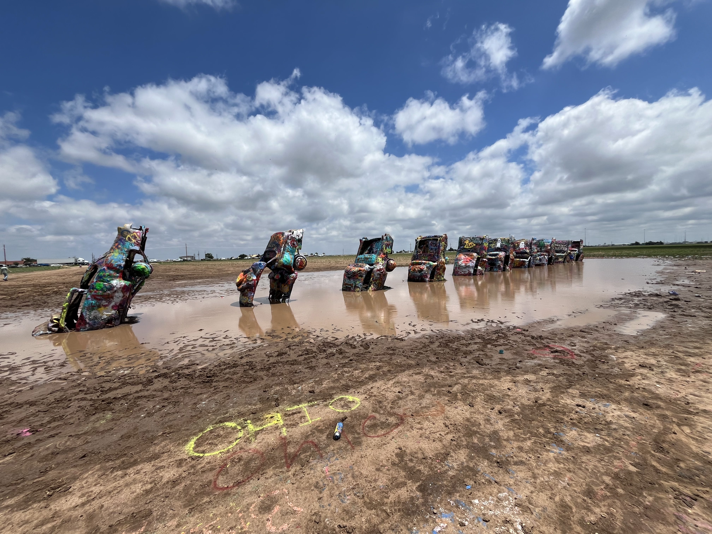
Our time in Texas was even more brief than Oklahoma. We finally received contact with Brendan as we were driving past the wind turbines of the Texas Panhandle. We saw the Leaning Tower of Texas, a water tower leaning in the direction of the highway. We then stopped at a Waffle House before leaving the South behind, along with stopping at Cadillac Ranch – an art installation by … that features ten old Cadillacs buried head-first into the ground. Poom added another crime to his list by graffitiing part of the highway barrier (it was part of the art installation, allegedly). We then saw some impressive cuestas as we drove out of Texas’ panhandle.
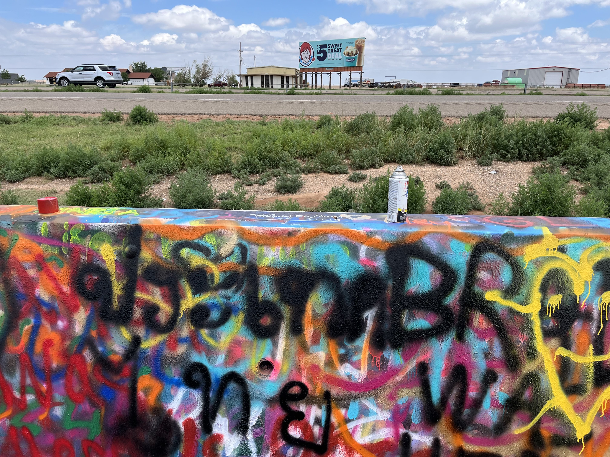
NM
We stopped along Route 66 at the Route 66 car museum. It was a great stop and they had everything from an old model T, thunderbirds, and odd pickup trucks and vans. We then finished our drive out West and arrived in Santa Fe in the evening. Thus concludes our south state capitol tour - Nashville, Little Rock, Oklahoma City, and Santa Fe are all state capitals. The next state capital we will visit on this trip is Salt Lake City, UT - stay tuned!
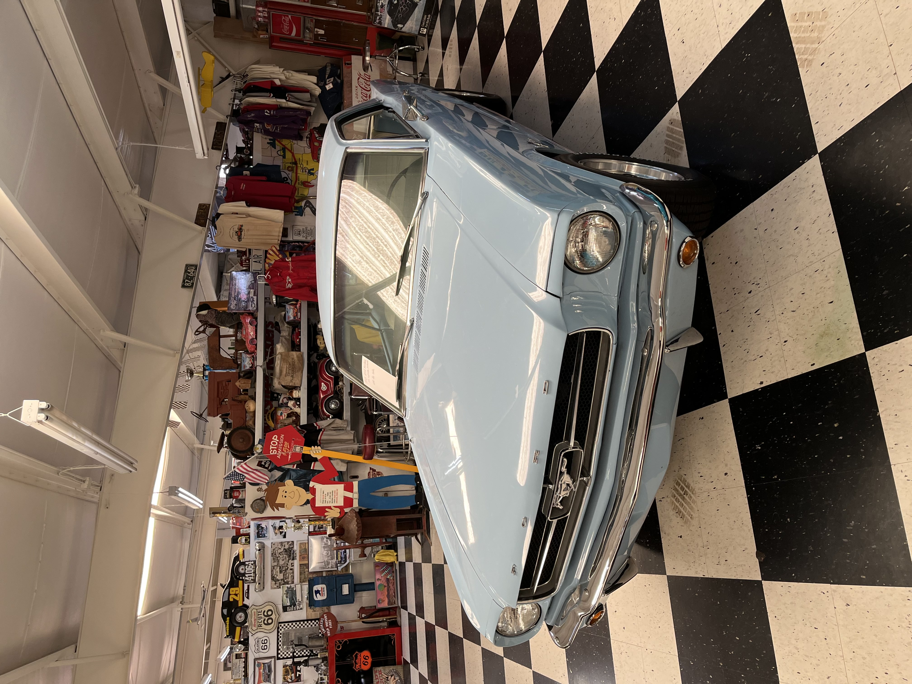
Preliminary/Qualitative I-40 license plate data:
All U-hauls are registered in AZ
There are common states trucks are licensed in - IN IL ME NE CA
TX likes their white cars
Soooo many people with temporary license plates!!
Even on this interstate, crossing state lines immediately changes the vast majority of vehicles to the home state.
Saw a lot more fellow Marylanders than expected (3)
We imagine that state laws requiring when/if you have to change the license plate when you buy a used car matter.
Saw both Alaska and Hawaii - we think the hardest state to get is none other than Rhode Island.
From Nashville to outside of OKC, we saw 710 vehicles.
Santa Fe
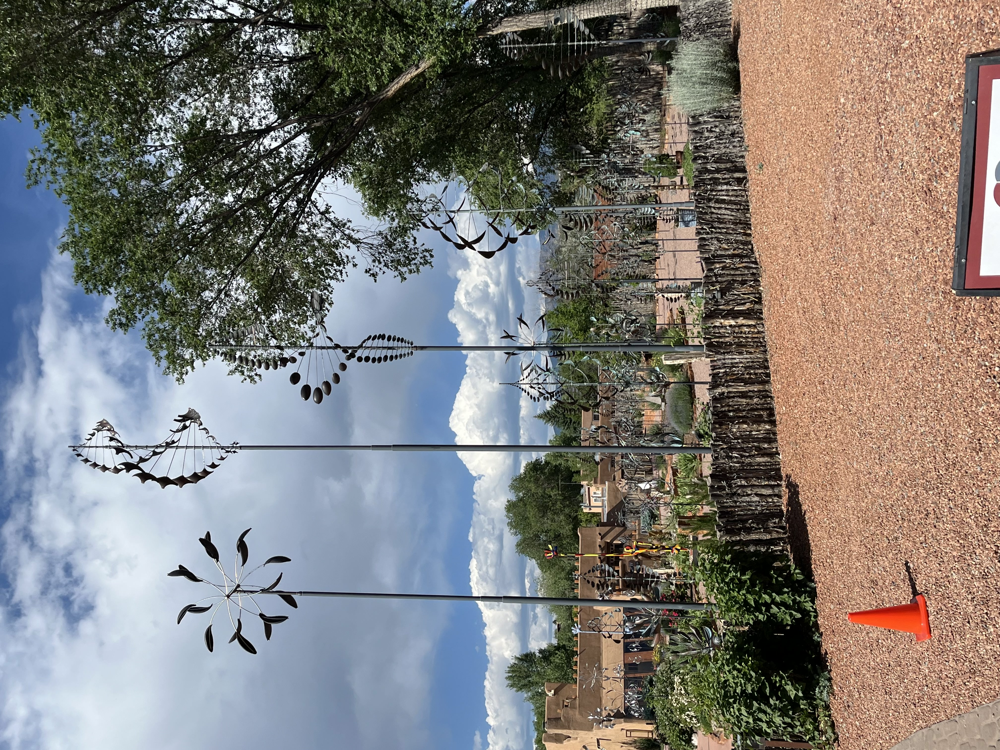
We are in (New) Mexico! In case there was any confusion, we did not cross an international border. Now officially West, we arrived in Santa Fe for dinner. We had fantastic New Mexican-style enchiladas and stuffed sopapillas – a type of fried pastry common in the Spanish-speaking world. As we were ordering the dishes, we were asked the official state question of New Mexico: “Red or Green?” This is not a “go/no go” on spice, but instead refers to the type of New Mexican chile one prefers on their dish. Chiles hold a special place in New Mexican food tradition, as chile has been cultivated in New Mexico for quite some time and gives the cuisine a distinctive kick. Dan went for “Red,” as that is supposedly sweeter and is less reminiscent of the stereotypical “pepper” taste, a taste that Dan is not a fan of. Being as indecisive as ever, Poom went for “Christmas” – smothering the dish with both red and green peppers.
We then walked around downtown Santa Fe, but almost everything was closed by the time we got there. We had a great time marveling at the architecture of downtown Santa Fe – built to mimic the traditional Puebloan architecture common throughout the region. We then set up camp amongst ponderosa pines just east of Santa Fe in the Santa Fe National Forest. The campsite is only 15 minutes from downtown Santa Fe, but it was almost a world apart. During our stay, we came across two deer crossings and we did not get any cell service (not that we minded, of course). This was our first “dry campsite” (no water of any sort is available at the campsite), but the campsite was very clean and well-maintained.
The next day, Poom was able to enjoy his 5-cent morning cup of joe (the cheapest instant coffee he could find) in the pine forest. According to Dan, Poom was “the happiest that he had seen.” (seriously, pure bliss) We then made our way to Los Alamos, and appropriately played the Oppenheimer soundtrack on the drive up there. Listening to “Can You Hear The Music” as we drove up the side of a canyon was an unforgettable experience. We walked around town a bit and visited a great museum about the Manhattan Project. It was a good experience and gave us time to think about the more global role of science. My (Dan) favorite part was that they had the 35mm camera that was used to photograph the Trinity Test. Poom attempted to commit yet another crime by attempting to enter a road that was owned by the laboratory (definitely wasn’t me navigating).
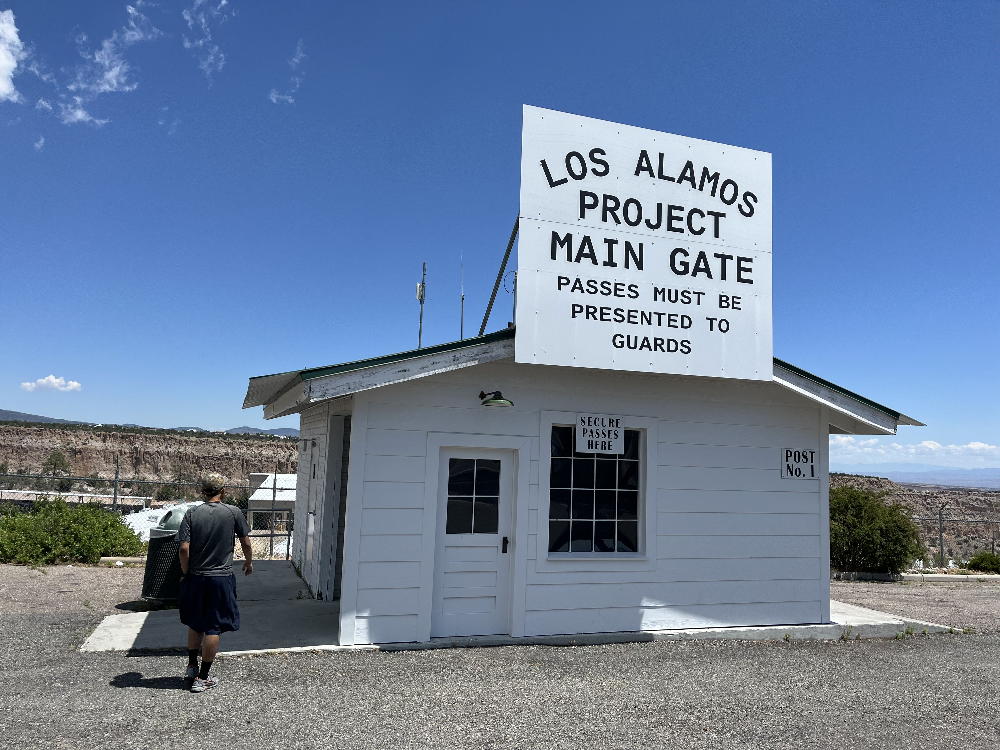
We spontaneously decided to visit Bandelier National Monument since we were close. We were pleasantly surprised to find out that the national monument is the site of a pre-colonial settlement. The settlement is located in a canyon, whose walls are lined with tuff – a rock indicative of a volcanic eruption event. Unlike what the name suggests, tuff is actually not that tough of a rock. People have been able to carve out caverns within the rock and create living spaces shaded from the sun in many locations. Poom found the site to be slightly reminiscent of Cappadocia in Turkiye. We were able to walk around the pre colonial settlement and learned about their ways of life.
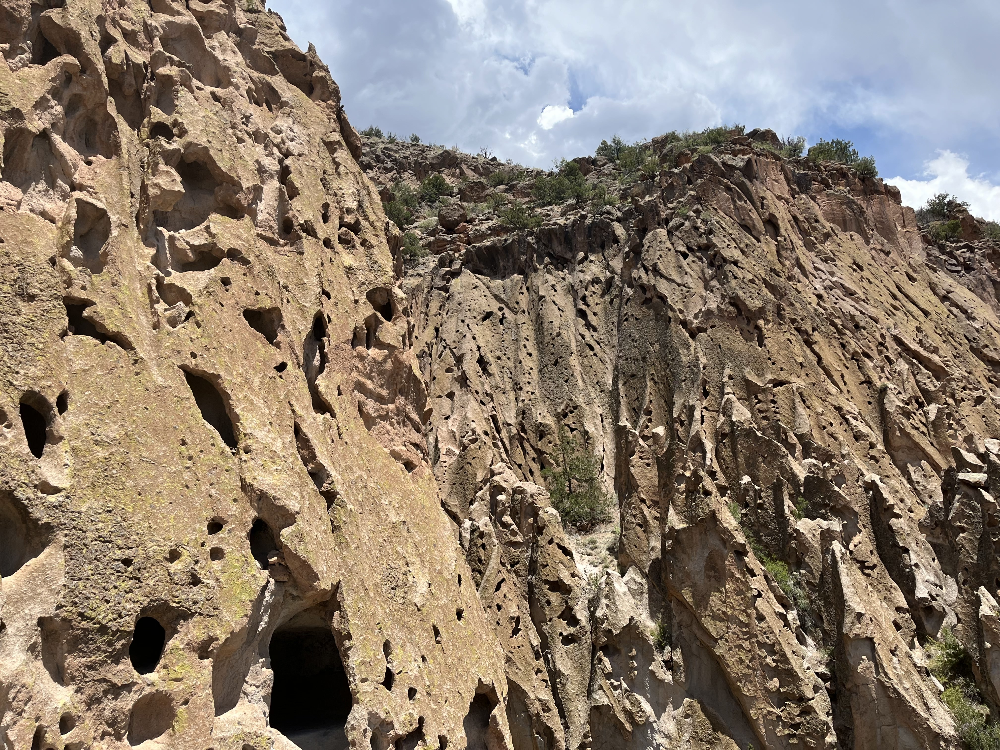
After that, we went back into Santa Fe to explore the Catholic cathedral (stunning) and Canyon Road, an art/sculpture district per the advice of a Santa Fe resident we met the day before. We then had more traditional Mexican burritos the next night at a food truck. Dan solidified his hatred for “Green,” saying that “it’s just heat with no redeeming flavor profile.”
Our last adventure in Santa Fe was an unexpected one - the car engine overheated. Luckily we were within walking distance of a gas station and were able to refill our depleted coolant reserve - with everything (seemingly) okay, we headed back to camp for the night.
- Dan and Poom
SW Colorado
Our drive to Durango, CO was one of the best drives I’ve ever experienced. They don’t have geography like this on the East Coast - I’ll let Poom fill you in on the geological details, but it was a gorgeous and fun drive.* We set up camp at a dispersed camping site (read: free & legal) in San Juan National Forest. We got really lucky and found a great spot next to a river. The rest of the afternoon/evening was spent in Mesa Verde - another beautiful drive and overlook of the region - we could see up to 50 miles into AZ/NM/UT as well. We’re also at the southernmost edge of the Rockies and could see those as well. We did a great hike up the side of a cliff and got to see ancient Petroglyphs, carved by the Pueblos almost a thousand years ago. On our drive out of the park, we saw a bear! He was sprinting across the road in front of us, and we were very glad we hit the brakes in time. Hopefully, we don’t get any closer to a bear on this trip, but that experience tops the wildlife charts. We then made our way back to our camp and heated up chicken noodle soup for dinner, for it was pitch black by the time we arrived.
*Poom here. This was our first run-in with the Colorado Plateau: a geological region surrounding the four corners which were shallow tropical seas and coastal regions during much of the Paleozoic and Mesozoic (read: since the Cambrian explosion in life to the era of the dinosaurs). The region, unlike surrounding mountains, has undergone little disturbance to its horizontal bedding. As a result, the region is often used as a field case study for the field of stratigraphy: an investigation of the geological stories from modern rock samples. The well-defined beds were certainly amazing for me to witness for the first time, as I am sure it was for Dan to.
The next morning, our plan was to drive up into the Rockies and possibly do some hiking - but almost all of the coolant we had put in in Santa Fe was gone. So we filled it up again and then called every auto shop in Durango and found someone to take a look. While it was in the shop, we stopped for coffee and to catch up on blog posts. We walked around historic downtown Durango and had some excellent tacos and ice cream (not from the same place, but both great!). The mechanics we went to were more than kind to us - since they weren’t able to exactly determine / fix the problem, they didn’t charge us. They ruled a lot of things out and gave us good advice to help keep the car on the road. I made my first ever google review - and very happy the car is (probably, mostly) ok. We drove an hour to Cortez, and stopped to get some groceries and supplies for the next week.
The other corners
The next morning we made our way to our campsite about an hour north of the Grand Canyon. On the way, we passed through SE Utah and NE Arizona. Despite the car’s wounded state, we managed to hit 100,000 miles near Mexican Hat – both a settlement and a geological formation in SE Utah. To celebrate, we did a loop around the rock formation resembling a sombrero. Using his limited knowledge about rocks, Poom infers that the structure was carved out by wind. We also saw dramatic anticlines as backdrops to the Mexican Hat. We then spent most of the morning driving through Monument Valley, another spectacular sight in the Southwest. Again, they don’t have rocks like this on the East Coast. Here, we witnessed magnificent buttes – thin, tall peaks formed when a harder rock bed protects a softer rock bed from weathering and erosion from above. Lastly, we stopped at the Glen Canyon dam to get a great view of the Colorado River. We finally crossed the river at Marble Canyon before driving parallel to the awe-inspiring Vermillion Cliffs and ascending the Kaibab Plateau – the formation hosting the topmost bed of the Grand Canyon today. While we were only a couple of miles from the four corners monument - it’s not actually geographically correct, so we decided it wasn’t worth the 20 bucks to park there and see it.
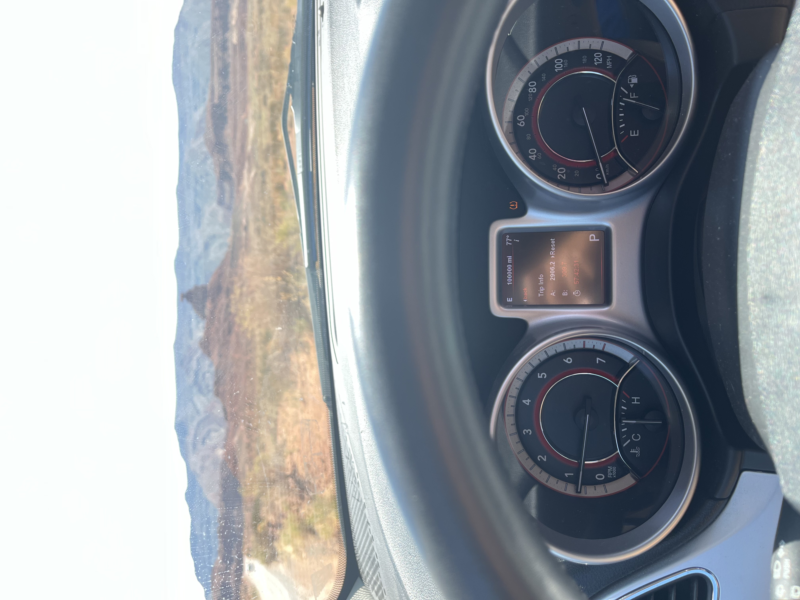
The Grandest Staircase
Dan may be able to vouch for this, but Poom has used the term “Grand Staircase” to describe the geology of the entire region, but it is such an apt term for what is going here geologically. To make a long story short, the entire history of the Colorado Plateau is laid bare for all to see. From the oldest basement rocks in the bottom of the Grand Canyon, one can “walk up the staircase” north to when the Colorado Plateau began to form around 20 million years ago. From a geological point of view, there is simply nothing quite like it anywhere else on Earth. Throughout our stay in the Grand Canyon area, we were privileged enough to lay on a stairwell and walk up and down the staircase.
Grand Canyon
The word grand doesn’t seem to capture the scale of this canyon. Then again, I don’t know if any other word or image could do so either. We were on the North Rim, and there weren’t too many people in the park. About five minutes in, Poom declared that the North Rim was better - there are more “smaller” canyons on this side and thus much more varied landscapes and geology closer to where we were. The canyon is over 10 miles wide and a mile deep - truly a spectacular sight. The first day we were there we drove around the rim and did a couple big hikes through the forest to get to various scenic points. On our last hike we ran into an off duty ranger camping at the summit who was photographing a raven - she gave us great advice for a bunch of parks on the trip. We ended up on the other end of the rim for sunset. This has definitely been our favorite national park so far, and it was our biggest day for steps at ~30,000. Poom seemed especially baffled that the North Rim was so under visited, especially given that we were there on Fathers Day.
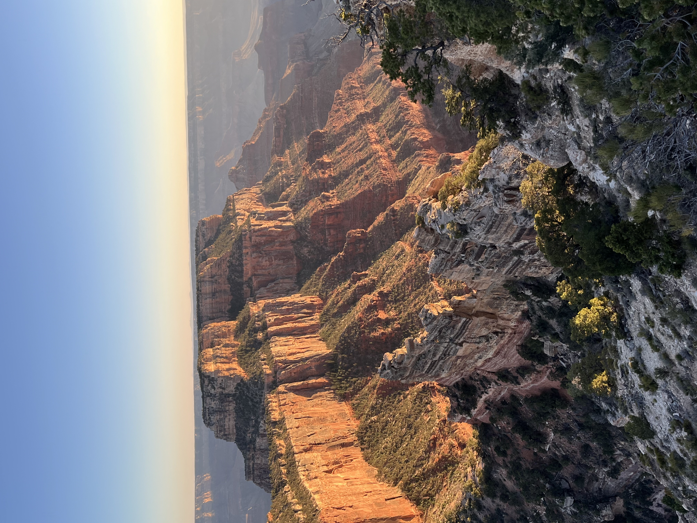
The next day we decided to descend into the canyon. We descended around 2200ft, a little less than halfway down the canyon. During the hike, Poom was especially excited as we descended through each geological formation. The trail changes character as we transitioned from bed to bed. We began atop the Kaibab limestone formation before transitioning to the Coconino Sandstone formation and ending up at the very red (thank you oxidation) Hermit Shale formation. Poom was not sure if we made it to the Supai group directly below. As Poom will discuss later, this represents the different geological settings during the formation of these beds. It was a great hike, top 3 ever for Poom and definitely the best sight wise for Dan. One can also feel the temperature increase with descent, which we prepared with lots of water. Going back up was difficult at best, but we made a lot of friends along the way. We took things slow and made sure not to over exert ourselves, allowing for some time to chat with day hikers and rim-to-rim hikers alike. There were a couple of groups who had started at 2am in the south rim, and even one guy who had done that and planned to go back to the south rim the same day. We gave him some trail mix and wished him the best of luck - 48 miles plus ~11000ft in elevation is absolutely absurd for 24 hours. We also ran into a desert ecology class on a trip from UChicago - maybe we’ll meet up with them at the end of our trip in Chicago, who knows.
Poom’s Geology Corner: The Grand Canyon represents one of the best case studies for the field of stratigraphy - piecing together a geological story from rock formations. At the Grand Canyon, this story was one of shifting coastlines, uplift, and erosion. The area that used to be the Grand Canyon was a shallow sea near the continental margin. As coastlines shifted with a varying climate, the region shifted from a river mouth to a deeper water environment hosting corals. These different environments form different types of rock, with sand stone being formed when the oceans regresses most, shale being formed nearer to the shoreline, and limestone forming deepest of all. The alternating beds essentially record where the coastline was at any given time.
Plate tectonics uplifted the formations in one piece without deformation. The Colorado river cuts through this feature and exposes the different layers through time. However, the record at the Grand Canyon is not quite comprehensive. Layers above the Kaibab Limestone formation were eroded away. As the Kaibab formation lines up with the end of the Paleozoic, the Grand Canyon has no record of the Mesozoic era. Put simply, the Grand Canyon has no records of dinosaurs. For that, you will need to tune in to our Utah post, where Poom will spend more time talking about the Grand Staircase.
Utah
After leaving the Grand Canyon, we were immediately treated to a wonderful view of a part of the Grand staircase, a sedimentary geological formation recording much of the history of the region before recent geologic uplift. We stopped at LeFavre viewpoint, where 5 of these formations can be seen in rapid succession as a series of receding cliffs. Starting from the bottom, these are the chocolate, vermillion, white, gray, and pink cliffs. Over the course of two-ish days, we “climbed the staircase” from the Kaibab limestone to the top of the pink cliffs.
We stayed at the border town of Kanab, located next to the vermillion cliffs. Here, we enjoyed great Mexican food before resting for the day. We then spent a day in Zion, although it was closer to half of the day after we got both in the park and through the line to the shuttle system - Poom was disgruntled by the fact it felt like an amusement park. However, the park’s limited space and high visitation numbers provide no feasible alternatives. As we entered the park from the east, we saw that the canyon managed to cut through the white cliffs into the vermillion cliffs. The sandstone formations also exhibited “cross-bedding” : a geological phenomenon that indicates shifting winds during the lithification (turning sediment into rock) process. Poom must have said the word “cross-bedding” at least 15 times before we actually found parking in the park.
Once we managed to situate ourselves in the park, we decided to do two separate hikes. Dan did the Narrows - a popular hike through the headwaters of the Virgin River, while Poom did the hike up to Angels landing - ending short of summiting due to not being granted a permit. Poom’s hike took him up the vermillion cliffs to see the impressive down-cutting abilities of the Virgin river. At the top, Poom decided to hike a part of a backcountry trail to reach the bottom of the white cliffs and get a view of the canyon, unfortunately somewhat obscured by Angels Landing itself. Dan's hike involved wading through the river that cut into the canyon - not sure if walking through water is still considered a hike at that point, but if so it was definitely the best I’ve done. There were very smart people who hiked all the way upstream and then intertubed downstream to the end of the hike.After our day in Zion we dispersed camp in Dixie National Forest (again, for free), where we experienced the coldest night on our trip yet. The temperature dipped to around 5 degrees C (~40 F), but we managed to survive.
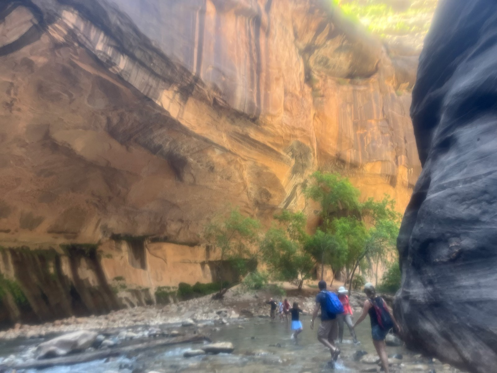
The next day was more of a driving / sightseeing day after our three days of hiking. On our way out of our campsite we stopped at Cedar Tree National Monument - which had a similar view to Bryce Canyon without the crowds. We also drove up to the highest point in the area (and probably our whole trip) at 11307 feet. We then started our drive to Salt Lake City and stopped at an In-N-Out on the way since it was the only one we would pass on the trip - definitely the best of what fast food has to offer.
When we got to Salt Lake City, we walked around downtown near the capitol and the Salt Lake Mormon Temple. Although the temple was covered in scaffolding, you could still tell it was an impressive building. We also got ice cream from a place with a flavor called the GOAT - a goat milk based ice cream that apparently won best in America in 2019. It was very good, although the other ingredients of lemon/raspberry/almonds aren’t exactly what I prefer in ice cream. Also a side note, Salt Lake City is where the streets have no name - they’re instead numbers and directions such as W 12200 S. You would think as a fan of numbers and ease of use I would be a fan of this system, but I kind of missed named streets.
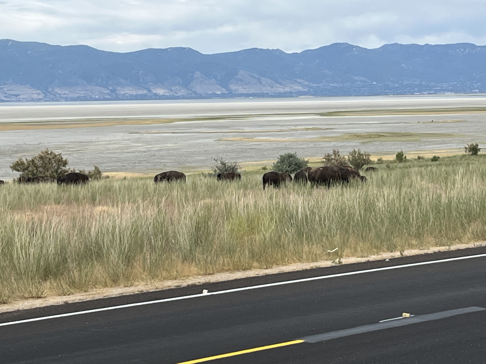
We then spent the evening on Antelope Island. We saw a series of horizontal lines on the side of the hills rising from the lake. The hills represent the shorelines of the much-bigger Lake Bonneville- a lake that formed during the last ice age during which the Great Basin experienced a much wetter climate than it does today. As the lake evaporated, it left behind salt deposits forming the salt flats we observed around the modern Great Salt Lake. We did a hike out to the southern part of the island and walked on some of the salt flats - salt in all directions is definitely a new sight.